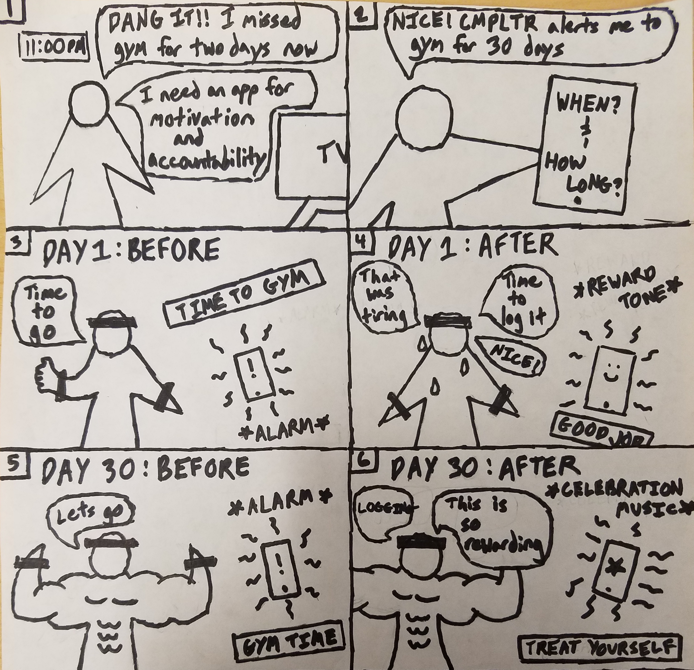
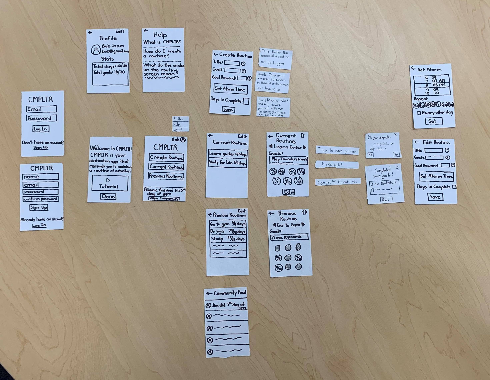
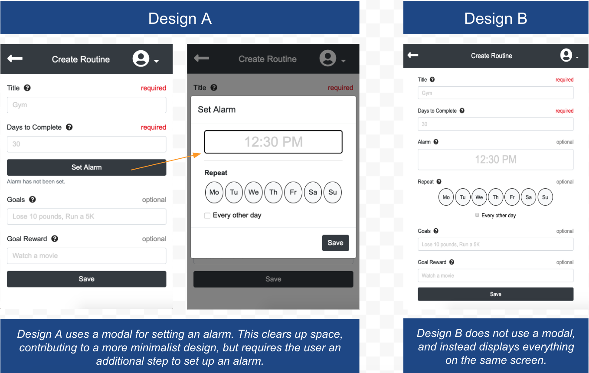

We were told to take time to observe students and the fields of learning. Some issues that we observed were with the navigation of UCSDs’ class portals, and how packed a library or coffee shop. We also looked into the issue of procrastination and motivation, which led us to create COMPLETER to nullify those issues, keeping the user accountable in completing their tasks.
To understand how our app would be used, we created a storyboard showing the app’s ability to notify the user to fulfill their task and rewards them for completing them.
Before making the actual app, we made a paper prototype to see the basic visual design and user flow of the app. We then created a video of the paper prototype in a user ase scenario to make sure our app fulfills its intended purpose.
To improve our paper prototype design, we conducted heuristic evaluations on three users with the use of Jakob Nielsen's 10 Heuristics. We recorded their thoughts as they traversed through the whole prototype, and organized them into a document.
To see how the app will realistically look like and function, we used Adobe XD to create a digital interactive prototype.
Afterwards, we went into developing the app. We used HTML, CSS, and Javascript for development, uploaded to Github for version control, and deployed to Heroku for viewing.
To improve our app’s design, we conducted user testing on 3 UCSD students. We had them traverse the app completing 3 tasks while speaking their thoughts. At the end, we debriefed them with some questions. Throughout the whole testing, we recorded their thoughts and actions to see what we could change.
User Tasks:
Scenario: You are going on vacation to Los Angeles from San Diego on November 15th. Your hotel check in time is after 2 pm on that day.Debrief Questions:
One aspect that was noticed through user testing, was the design of the “Create Routine” screen. We conducted some A/B testing to see whether an additional screen was necessary for the “Set Alarm” function. We determined that an additional screen was not needed and the “Set Alarm” function could be put within the screen.
After implementing our results from the A/B test, we finalized the app, introducing a green color scheme and fixing a few errors.